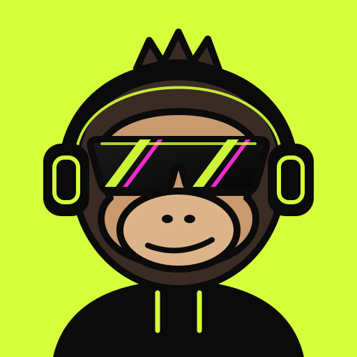

Full-stack разработчик // Anygroup
Делаю сайты, веб-платформы и мобильные приложения с 2018 года. В Anygroup мы помогаем компаниям в Казахстане продавать онлайн: сайты, интеграции с Kaspi и 1С, чат-боты и внедрение ИИ.
8+лет в разработке
100+проектов
24статьи
- Go
- PHP
- Laravel
- TypeScript
- React
- Next.js
- Flutter
- SQL
- NoSQL
- Kafka
- Docker
- Сайты
- Мобильные приложения
- Kaspi
- 1С
- Чат-боты
- Внедрение ИИ
- SEO
- Автоматизация
Track list
Статьи на anygroup.kz
- Клиенты спрашивают ChatGPT, где купить. Как сделать, чтобы он советовал вашу компанию
- Что такое GEO и как компании попадают в ответы нейросетей
- Как открыть интернет-магазин в Казахстане: ИП, касса, оплата, доставка и сколько это стоит
- Вайбкодинг и ИИ в разработке: где он помогает, а где опасен
- SEO продвижение сайта: что входит в работу, сколько стоит и когда ждать результат
- Как внедрить ИИ в бизнес: задачи, где он уже окупается, и где пока нет
- Сайт есть, заявок нет: 10 причин и как проверить каждую за вечер
- ИИ-ассистент по базе знаний компании: как он работает и что для него подготовить
- Редизайн сайта: когда он действительно нужен и как не потерять позиции в поиске
- Сайт и Kaspi: как связать интернет-магазин, Kaspi Магазин и оплату
- Какой сайт нужен бизнесу: лендинг, визитка, корпоративный сайт или магазин
- Как попасть в 2ГИС, Яндекс Карты и Google Maps: локальное SEO в Казахстане
- WhatsApp Business API: чем отличается от обычного WhatsApp и когда он нужен
- Цифровизация малого бизнеса: с чего начать и в каком порядке
- Интеграция сайта и CRM с 1С: как настроить обмен данными и не утонуть в ошибках
- Лендинг или многостраничный сайт для рекламы: что лучше приводит заявки
- Что такое прототип сайта и почему с него стоит начинать
- Как написать техническое задание на сайт или приложение, если вы не программист
- Tilda, WordPress или своя разработка: что выбрать для сайта компании
- Медленный сайт теряет клиентов: как проверить скорость и что с ней делать
- Сколько стоит мобильное приложение и как не переплатить
- CRM для малого бизнеса: зачем нужна и как внедрить без хаоса
- Чат-бот для бизнеса в WhatsApp и Telegram: что умеет и как внедрить
- Сколько стоит сайт и как сравнивать предложения студий
Booking
Чем могу помочь
- 01Разработка сайтовЛендинги, корпоративные сайты, интернет-магазины и веб-сервисы.
- 02Мобильные приложенияiOS и Android: MVP, клиентские сервисы, корпоративные приложения.
- 03АвтоматизацияCRM, интеграции с 1С и Kaspi, заявки, документы и отчёты.
- 04Чат-ботыTelegram и WhatsApp: запись, заказы, ответы на вопросы, заявки в CRM.
- 05Внедрение ИИAI-ассистенты, обработка документов и заявок, нейросети в CRM.
- 06SEO продвижениеGoogle, Яндекс, карты и ответы нейросетей.
Line-up
Обо мне
Сейчас
Anygroup
IT-студия в Алматы: сайты, мобильные приложения, автоматизация бизнеса, SEO и внедрение ИИ.